Hộp công cụ: hiển thị danh sách các điều khiển tùy chỉnh có thể thêm, bao gồm: ô nhập liệu, hộp văn bản, nút tùy chỉnh, nút chọn đơn, hộp thả xuống, vùng ảnh, khung nhìn, cửa sổ hiển thị, nút chức năng, trạng thái thiết bị.
Hộp thoại thiết lập thuộc tính: chỉnh sửa kích thước, vị trí, kiểu dáng và thông tin liên kết của các điều khiển tùy chỉnh.
Thanh công cụ: các nút chức năng cho bố trí và sắp xếp điều khiển, bao gồm: canh trái, canh phải, canh trên, canh dưới, cùng kích thước, phân bố ngang, phân bố dọc, bố trí ma trận khung nhìn, hoàn tác, làm lại, quản lý bố cục, lưu bố cục, mở bố cục, xóa bố cục hiện tại và cấu hình thanh trạng thái giao diện sản xuất.
Hoàn tác/Làm lại: hỗ trợ hoàn tác/làm lại các thao tác như thay đổi kích thước, vị trí và thông tin liên kết của điều khiển. Giới hạn thao tác hoàn tác/làm lại là 40 lần.
Bố trí ma trận khung nhìn: sắp xếp các khung nhìn theo số cột nhập vào, số cột tối đa tương ứng với số khung nhìn được thêm.
Quản lý bố cục: tạo bố cục trống mới, tạo bố cục mặc định mới, tạo từ mẫu, lưu làm mẫu, sao chép bố cục, xóa bố cục, đặt làm bố cục chính, v.v.
- Tạo bố cục trống mới: tạo một bố cục mới gồm 6 nút chuyển đổi bố cục, nút chuyển bố cục, chạy, tạm dừng, dừng, lưu, quản lý quyền, trạng thái hệ thống, giao diện kỹ sư và logo.
- Tạo bố cục mặc định mới: tạo 6 bố cục mới gồm Home, Alarm, Config, Data, Vision và Setting. Trong đó, Home là bố cục chính và cả 6 bố cục đã được liên kết sẵn. Nội dung trong mỗi bố cục giống với bố cục trống.
- Tạo bố cục phong cách mới: giống với tạo bố cục trống mới.
- Tạo từ mẫu: tạo một bố cục đã được lưu dưới dạng mẫu.
- Lưu làm mẫu: chọn một bố cục để lưu lại làm mẫu.
- Sao chép bố cục: sao chép bố cục đang được chọn. Nếu tổng số bố cục vượt quá 20, sẽ không thể sao chép thêm.
- Xóa bố cục: xóa bố cục đang được chọn.
- Đặt làm bố cục chính: đặt bố cục được chọn làm bố cục đầu tiên hiển thị trong giao diện sản xuất.
- Chuyển sang bố cục phong cách mới: áp dụng cho bố cục phong cách cũ hoặc phong cách A (trong phiên bản tùy chỉnh), có thể chuyển sang phong cách mới. Lưu ý: chuyển đổi này là không thể đảo ngược.
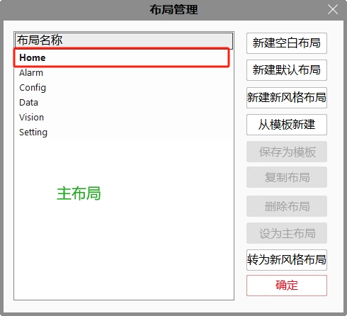
Lưu bố cục: lưu tất cả các bố cục trong giải pháp hiện tại.
Mở bố cục: mở bố cục đã lưu, thao tác này sẽ ghi đè lên bố cục hiện tại trong giải pháp.
Xóa bố cục hiện tại: xóa bố cục đang hiển thị.
Canvas: hiển thị bố cục hiện tại, có thể chuyển đổi bố cục bằng cách chuyển tab.
Nút đóng: đóng giao diện chỉnh sửa giao diện sản xuất.
Thanh trạng thái: hiển thị thông tin nhắc nhở.
Điều khiển
Thêm điều khiển: nhấp chuột trái vào điều khiển muốn thêm trong hộp công cụ, di chuyển chuột đến canvas, kéo chuột trái để thay đổi kích thước điều khiển, là hoàn tất thao tác thêm điều khiển.
Ô nhập liệu : kích thước, vị trí và thông tin liên kết của điều khiển.
Vị trí và kích thước của điều khiển có thể được chỉnh sửa bằng cách kéo chuột hoặc thay đổi giá trị trong thuộc tính. Mỗi bố cục tối đa thêm được 100 điều khiển.
Kiểu điều khiển bao gồm: font chữ, cỡ chữ, màu chữ, màu nền.
Các kiểu dữ liệu có thể liên kết gồm: char, double, float, int, int64, long, short, string, unsigned char, unsigned long, unsigned short.
Chỉ đọc: nghĩa là không thể chỉnh sửa giá trị trong giao diện sản xuất. Nếu được chọn, điều khiển là chỉ đọc. Mặc định không chọn.
Biến: biểu thị liên kết với biến chứ không phải tham số công cụ. Nếu được chọn, liên kết là biến. Mặc định không chọn.
Đầu ra: biểu thị tham số công cụ được liên kết là tham số đầu ra/đầu vào. Nếu được chọn, là tham số đầu ra. Mặc định không chọn.
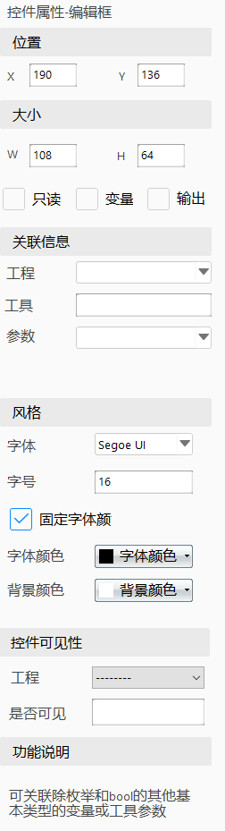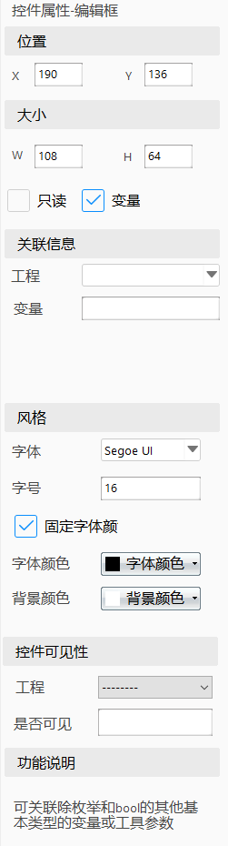
Hộp văn bản : kích thước, vị trí và thông tin liên kết của điều khiển.
Tên hiển thị, tức là thuộc tính Caption. Mỗi bố cục tối đa thêm được 200 điều khiển.
Kiểu điều khiển bao gồm: font chữ, cỡ chữ, màu chữ, màu nền. Hộp văn bản mới tạo mặc định không có màu nền, sau khi thiết lập màu nền sẽ không thể thay đổi thành không màu.
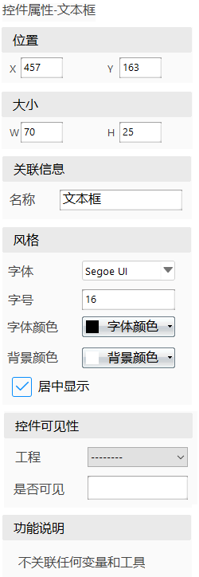
Nút bấm : kích thước, vị trí và thông tin liên kết của điều khiển.
Tên hiển thị, tức là thuộc tính Caption. Nút bấm được thêm từ bảng điều khiển. Mỗi bố cục tối đa thêm được 200 nút.
Kiểu điều khiển bao gồm: font chữ, cỡ chữ, màu chữ, màu nền.
Các thao tác có thể liên kết gồm: thực thi quy trình chỉ định, dừng project đã chọn, mở giao diện thuộc tính nâng cao.
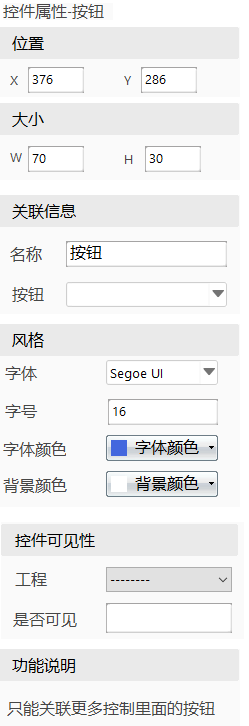
Hộp chọn đơn : kích thước, vị trí và thông tin liên kết của điều khiển.
Tên hiển thị, tức là thuộc tính Caption. "Project" là nơi chọn thuộc tính liên kết. Nếu là biến toàn cục thì không cần chọn. Chỉ có thể liên kết với dữ liệu kiểu bool. Mỗi bố cục tối đa thêm được 100 hộp chọn đơn.
Kiểu điều khiển bao gồm: font chữ, cỡ chữ, màu chữ, màu nền. Hộp mới tạo mặc định không có màu nền, sau khi thiết lập màu nền sẽ không thể đổi lại thành không màu.
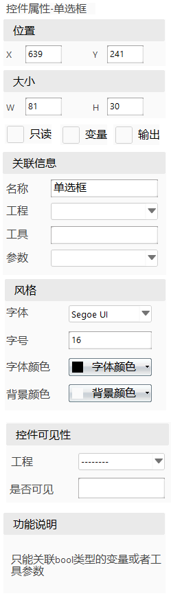
Hộp thả xuống 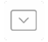: kích thước, vị trí và thông tin liên kết của điều khiển.
Tên hiển thị, tức là thuộc tính Caption. "Project" là nơi chọn thuộc tính liên kết. "Tool" là công cụ trong project được chọn. Chỉ có thể liên kết với dữ liệu kiểu liệt kê (enum).
Mặc định không phải thuộc tính "Chỉ đọc". Mỗi bố cục tối đa thêm được 100 hộp thả xuống.
Kiểu điều khiển bao gồm: font chữ, cỡ chữ, màu chữ, màu nền. Cỡ chữ của điều khiển này không hỗ trợ chỉnh sửa.
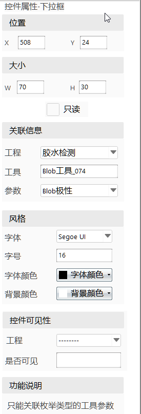
Vùng ảnh : vị trí, kích thước điều khiển. Mỗi bố cục chỉ có thể thêm 1 vùng ảnh.
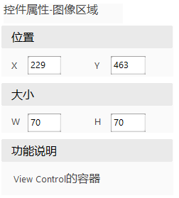
Khung nhìn
 : kích thước, vị trí và thuộc tính liên kết của điều khiển. Khung nhìn là đối tượng view được liên kết.
: kích thước, vị trí và thuộc tính liên kết của điều khiển. Khung nhìn là đối tượng view được liên kết.- Mỗi bố cục có thể thêm tối đa bằng tổng số view của tất cả project. Chỉ có thể thêm lên trên điều khiển Image.
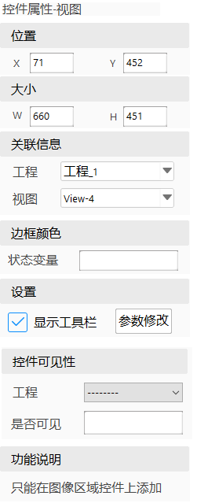
Chỉnh sửa tham số như hình dưới:
Trong đó, danh sách công cụ được chỉnh sửa chia làm hai loại: một là công cụ được thêm vào trong khung nhìn (công cụ này trong khung nhìn có hai trạng thái, tức là trong giao diện sản xuất, tham số có thể được hiển thị hoặc ẩn); hai là công cụ được thêm vào bằng chức năng tìm kiếm. 1. Thêm bằng tìm kiếm: thêm công cụ thường xuyên cần chỉnh sửa tham số. 2. Danh sách đã thêm: hiển thị danh sách công cụ có thể chỉnh sửa tham số trong giao diện sản xuất. Thứ tự tham số mặc định là theo thứ tự thêm vào. 3. Danh sách đã xóa: hiển thị danh sách công cụ trong khung nhìn không cần chỉnh sửa tham số trong giao diện sản xuất. 4. Nút xóa và hoàn tác: sử dụng để điều chỉnh danh sách công cụ cần chỉnh sửa tham số trong giao diện sản xuất.
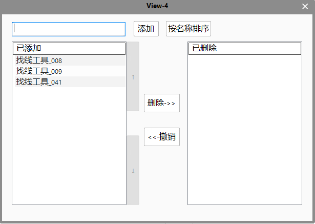
Cửa sổ hiển thị : kích thước, vị trí và thuộc tính liên kết của điều khiển. Cửa sổ hiển thị gồm hai loại: nhật ký sản xuất và phân tích thống kê. Mỗi bố cục chỉ có thể thêm tối đa 10 cửa sổ hiển thị. Mỗi bố cục chỉ có thể liên kết một nhật ký sản xuất. Mỗi cửa sổ phân tích thống kê trong bố cục hiển thị nội dung độc lập.
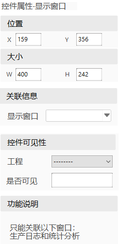
Nút chức năng : kích thước, vị trí và thuộc tính liên kết của điều khiển. Có thể liên kết với các nút chức năng trong giao diện sản xuất. Mỗi bố cục tối đa chỉ được thêm 17 nút chức năng.
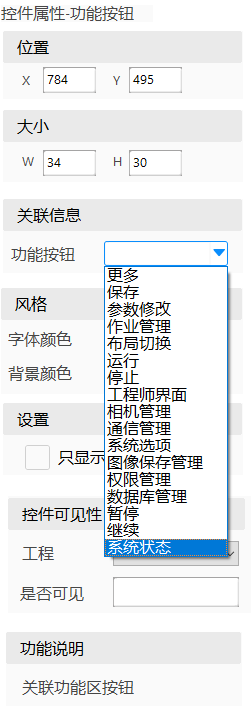
Bảng : kích thước, vị trí điều khiển, thiết lập bảng, thiết lập hàng/cột, chỉnh sửa ô, thông tin liên kết, kiểm tra giới hạn kết quả, cài đặt kiểu và hiển thị điều khiển.
Vị trí và kích thước điều khiển: có thể kéo chuột hoặc thay đổi giá trị thuộc tính để điều chỉnh. Mỗi bố cục tối đa thêm 10 bảng.
Thiết lập bảng: có thể chọn có bật tiêu đề bảng hay không. Khi bật, có thể thiết lập nội dung tiêu đề và chiều cao dòng tiêu đề.
Thiết lập hàng/cột: có thể thiết lập số lượng hàng và cột, chiều rộng hàng/cột. Chiều rộng có thể tùy chỉnh hoặc kéo trực tiếp. Cột ẩn dùng để ẩn cột không cần hiển thị trong giao diện sản xuất. Nhiều cột cách nhau bằng dấu phẩy (,).
Chỉnh sửa ô: hàng/cột đại diện cho ô hiện tại. Có thể dùng các nút lên/xuống/trái/phải để điều chỉnh vị trí ô hiện tại.
Chỉ đọc: biểu thị ô không thể chỉnh sửa trong giao diện sản xuất. Mặc định không chọn.
Biến: biểu thị liên kết với biến, không phải tham số công cụ. Mặc định không chọn.
Đầu ra: biểu thị tham số công cụ liên kết là đầu ra/đầu vào. Mặc định không chọn.
Thông tin liên kết: các kiểu dữ liệu có thể liên kết gồm: bool, char, double, float, int, int64, long, short, string, unsigned char, unsigned long, unsigned short.
Kiểm tra giới hạn kết quả: người dùng có thể thiết lập cột kết quả, cột giới hạn trên và cột giới hạn dưới. Khi giá trị kết quả nằm trong khoảng giới hạn thì hiển thị màu chữ đen, nếu không thì hiển thị màu đỏ.
Kiểu dáng: chọn danh mục cần thiết lập (gồm: tiêu đề, hàng/cột và dữ liệu liên kết). Các mục thiết lập gồm: font, cỡ chữ, màu chữ, màu nền.
Hiển thị điều khiển: thiết lập điều khiển có hiển thị trong project hay không.
Giải thích chức năng: mô tả ngắn gọn chức năng của điều khiển.
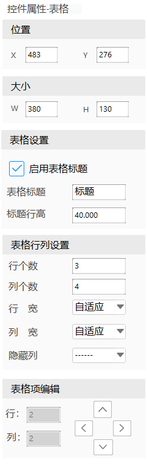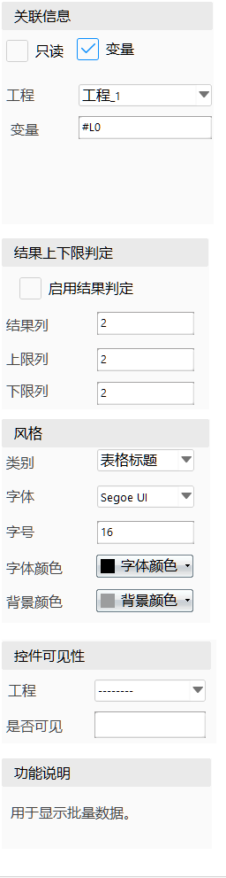
Chuyển đổi bố cục 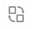: kích thước, vị trí, bố cục liên kết, biểu tượng liên kết, hiển thị điều khiển và giải thích chức năng. Có thể liên kết với các bố cục của giao diện sản xuất. Mỗi bố cục chỉ có thể thêm tối đa 6 nút chuyển đổi.
- Vị trí và kích thước điều khiển: có thể dùng chuột kéo hoặc thay đổi giá trị thuộc tính.
- Bố cục liên kết: thiết lập bố cục được liên kết với điều khiển "Chuyển đổi bố cục".
- Biểu tượng liên kết: thiết lập biểu tượng hiển thị được liên kết với điều khiển.
- Hiển thị điều khiển: thiết lập có hiển thị điều khiển trong project hay không.
- Giải thích chức năng: mô tả ngắn gọn chức năng của điều khiển.
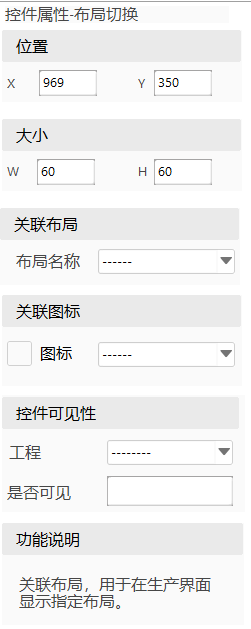
Hiển thị biểu tượng : kích thước, vị trí, biểu tượng liên kết, hiển thị điều khiển và giải thích chức năng. Dùng để hiển thị biểu tượng trong giao diện sản xuất. Mỗi bố cục chỉ thêm được 1 cái.
- Vị trí và kích thước điều khiển: có thể dùng chuột kéo hoặc thay đổi giá trị thuộc tính.
- Biểu tượng liên kết: thiết lập biểu tượng hiển thị liên kết cho điều khiển, dùng để hiển thị trong giao diện sản xuất.
- Hiển thị điều khiển: thiết lập có hiển thị điều khiển trong project hay không.
- Giải thích chức năng: mô tả ngắn gọn chức năng của điều khiển.
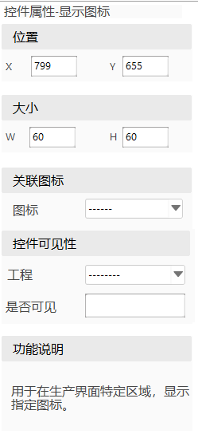
Menu
Sao chép: sao chép điều khiển hiện đang được chọn, hỗ trợ phím tắt. Việc chọn điều khiển hỗ trợ chọn theo vùng và chọn rời. Khi chọn rời, nhấn giữ Ctrl và nhấp chuột vào điều khiển.
Dán: dán điều khiển đã sao chép.
Cắt: cắt điều khiển hiện đang được chọn.
Xóa: xóa điều khiển hiện đang được chọn.
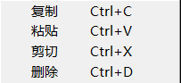
Cấu hình giao diện sản xuất
Chức năng chủ yếu là cấu hình các tùy chọn liên quan để điều khiển nội dung hiển thị của thanh trạng thái trong giao diện sản xuất:
Tự động chuyển bố cục: khi chọn mục này, cần chọn biến toàn cục liên kết. Thông qua script hoặc biểu thức thay đổi giá trị của biến toàn cục để đạt được mục đích chuyển đổi bố cục tự động.
Chọn hiển thị thanh trạng thái hay không;
- Chọn các mục cấu hình hiển thị của thanh trạng thái;